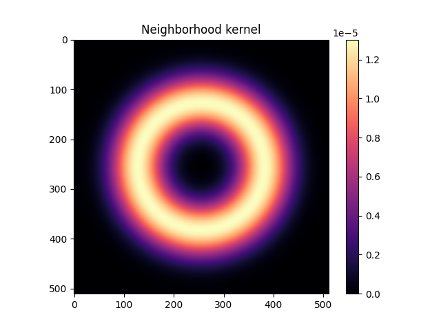
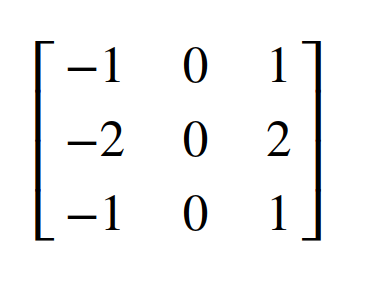

Locality via different types of convolution kernel
3x3 stencil methods vs. extended smooth kernels.


The smooth kernel used by Lenia and similar (left) and a 9-point stencil (Sobel filter) approximating the horizontal gradient.
- The examples we've seen so far use extended smooth kernels (as in Lenia).
- Next we'll look at systems that use 9-stencil (3x3 kernels) to approximate instantaneous gradients or Laplacians.